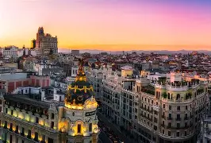
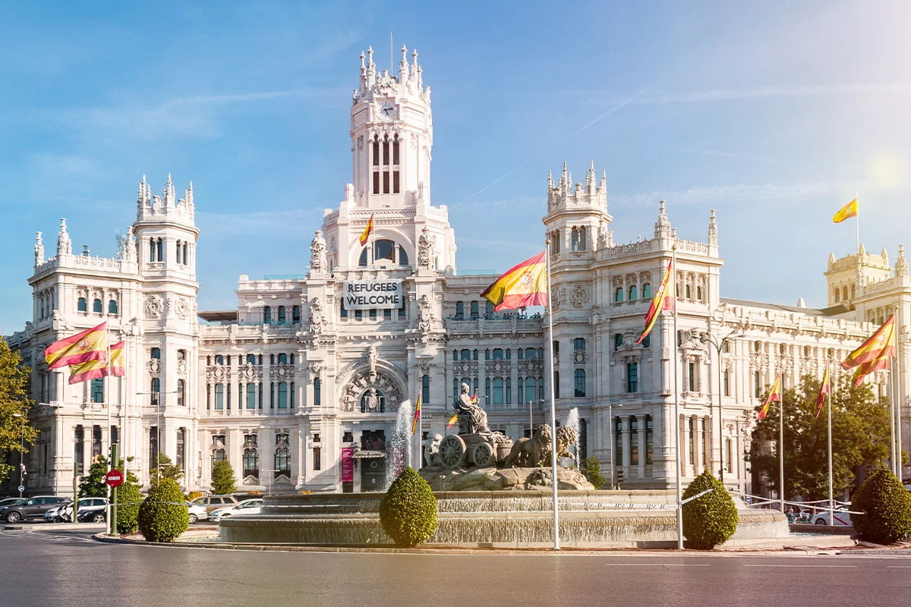
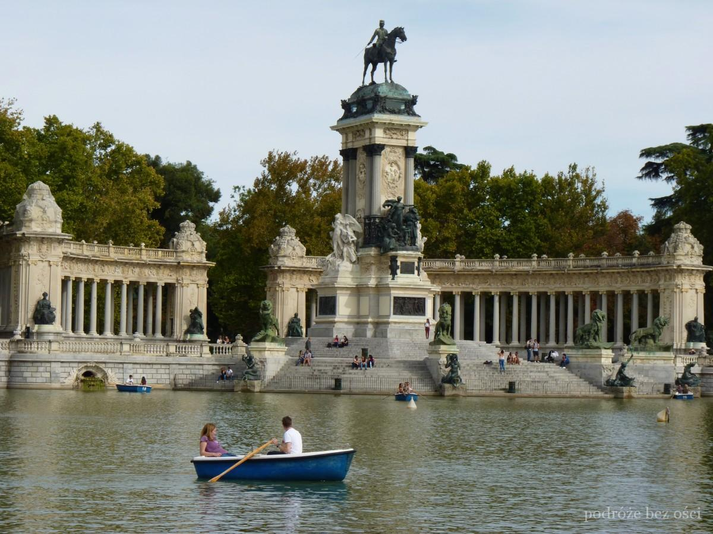
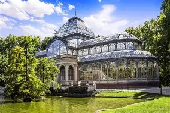
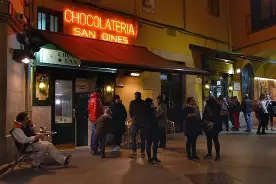
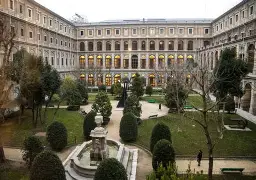

Madryt (hiszp. Madrid) – stolica i największe miasto Hiszpanii, położone w środkowej części kraju, na Wyżynie Kastylijskiej, u podnóża Sierra de Guadarrama, nad rzeką Manzanares. Ma powierzchnię 604,45 km² i liczbę ludności 3 266 126[1] (2019). Znajduje się w regionie autonomicznym Comunidad de Madrid, [2] który ma powierzchnię 8022 km² i liczbę ludności ok. 6,7 mln (2020)

Plaza de Cibeles – neoklasyczny plac w Madrycie, na pograniczu trzech dystryktów Centro i Retiro oraz Salamanca, którego nazwa pochodzi od uchodzącej za wizytówkę miasta Fuente de Cibeles, czyli fontanny z posągiem frygijskiej bogini Kybele. Fontanna została zbudowana za czasów panowania króla Karola III i zaprojektowana przez hiszpańskiego architekta Venturę Rodrígueza. Budowana w latach 1777–1782. Na placu znajduje się również jeden z symboli współczesnego Madrytu Palacio de Comunicaciones, czyli gmach poczty głównej. Wybudowany w 1909 przez Antonio Palaciosa. Od 2007 budynek jest siedzibą władz miejskich i burmistrza Madrytu (Ayuntamiento de Madrid).

Park Retiro (hiszp. Jardines del Buen Retiro de Madrid lub Parque del Buen Retiro) – park położony we wschodniej części Madrytu wśród gęstej zabudowy. Zajmuje powierzchnię 120 hektarów. Sąsiaduje z zamożną i prestiżową dzielnicą miasta – Los Jerónimos i najważniejszymi muzeami: Prado i Thyssen-Bornemisza. Niedaleko znajduje się także Muzeum Królowej Zofii i Królewska Akademia Sztuk Pięknych San Fernando. Mieści się w nim półkolista kolumnada z pomnikiem Alfonsa XII, stojąca nad prostokątnym stawem, a po drugiej stronie znajduje się Pałac Kryształowy.

Pałac Kryształowy (hiszp. Palacio de Cristal del Retiro lub Palacio de Cristal) – budowla w całości ze stali i szkła, skąd bierze on swoją nazwę, znajdująca się w Parku Retiro. Pałac, wzorowany na londyńskim Crystal Palace, który zbudowano w 1887 roku, zaś konstruktorem pałacu był hiszpański architekt Ricardo Velázquez Bosco. Był wtedy pawilonem Filipin podczas wystawy prezentującej ówczesne hiszpańskie kolonie, oranżerią z egzotyczną roślinnością.

Chocolatería San Ginés to kawiarnia przy Pasadizo de San Ginés 5, w centrum Madrytu, w przejściu niedaleko kościoła San Ginés, na zachód od Puerta del Sol. Od 1894 roku serwuje głównie chocolate con churros (gorącą czekoladę i churros).

Muzeum Narodowe Centrum Sztuki Królowej Zofii (znane też jako Muzeum Królowej Zofii, hiszp. Museo Nacional Centro de Arte Reina Sofía, Museo Reina Sofía) – muzeum sztuki mieszczące się w Madrycie. Muzeum znajduje się w dawnym gmachu Hospital General. Stała ekspozycja znajduje się na drugim i czwartym piętrze. Są tam m.in. sale poświęcone twórczości Pabla Picassa, Salvadora Dalego i Joana Miró. W kolekcji muzeum są m.in. takie obrazy jak Guernica, Pejzaż z Cadacués i Wypadek.